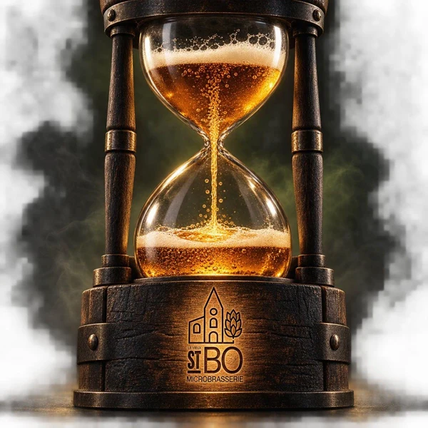
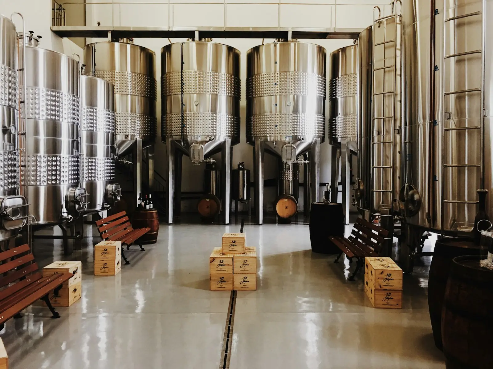

PROJET EN DÉVELOPPEMENTMicrobrasserie, restaurant et café sous un même toit, au 65, rue des Épinettes. Le projet est en recherche et développement : suivez les étapes jusqu'à l'ouverture.
Me tenir au courant
Styles cités publiquement par l'équipe.
Brasserie — les bières de Stev, brassées sur place.
Restaurant — la cuisine du chef Samuel.
Café — Miettes & Barista.
65, rue des Épinettes, Saint-Boniface (QC)
819-383-8446 · info@levieuxstbo.ca
Date d'ouverture à confirmer.*